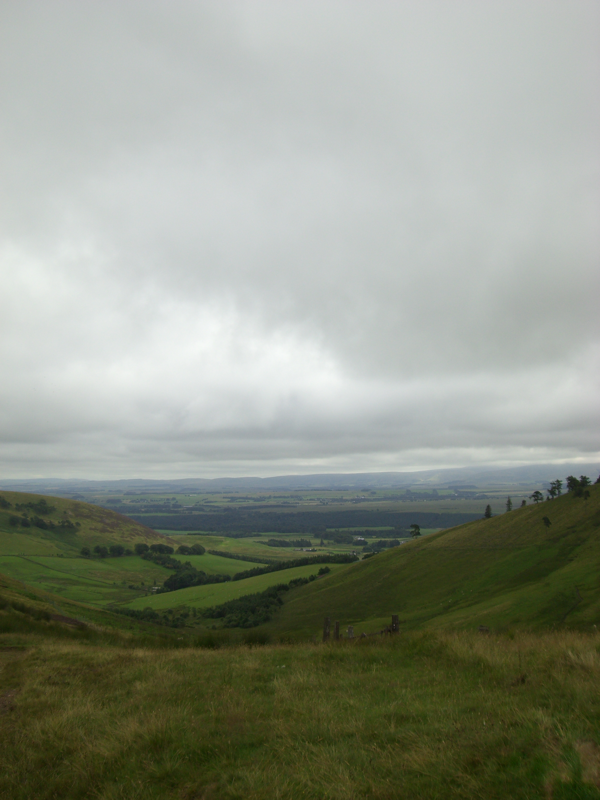

Welcome to my website. Its
contents provide details about my current work
and my previous research, including the
stimulus set I developed to study music and
language processing. Hopefully you will find
what you are looking for, but, if not, please
don't hesitate to get in touch (details in the
side bar to your right).
Happy perusal!
Randomness is very difficult to achieve... organisation always merges back if you don't pay attention.
- The science of sleep